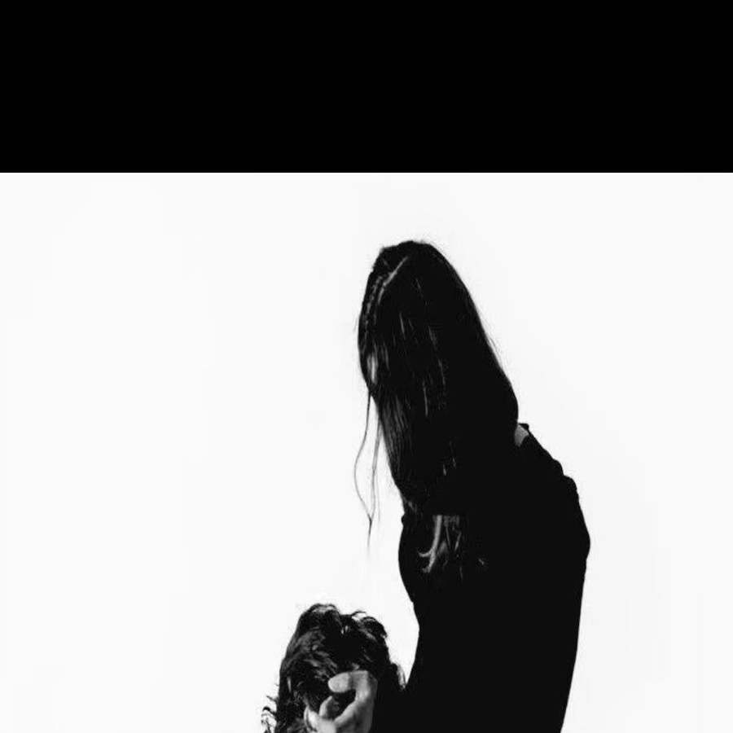

A small place on the Internet
DONGGUI
我所想望的，无非是试着依我自发的本性去生活。
为何如此之难？
为何如此之难？
一个属于自己的小小角落。记录阅读、德语、思考，以及那些值得留下来的东西。
SCROLL TO EXPLORE ↓

Explore
01
The theme
02
“我所想望的，无非是试着依我自发的本性去生活。
为何如此之难？”
Ich wollte ja nichts als das zu leben versuchen, was von selber aus mir heraus wollte. Warum war das so sehr schwer?
这句话比一句简单的座右铭更接近这个网站存在的理由。
阅读、学习、写作和生活，最终都指向同一个问题：我能不能依照自己的本性去生活？
所以这里不追求热闹，只记录那些真正属于自己的东西。